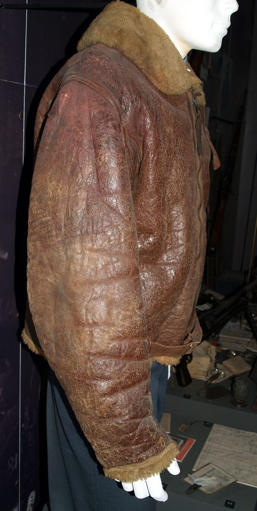
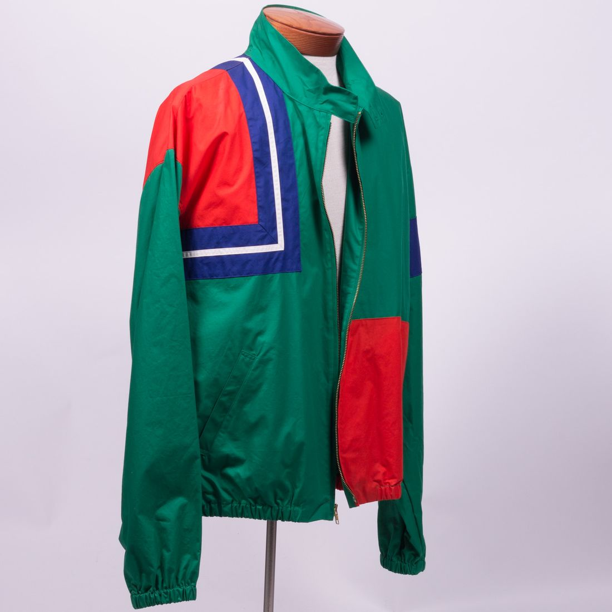
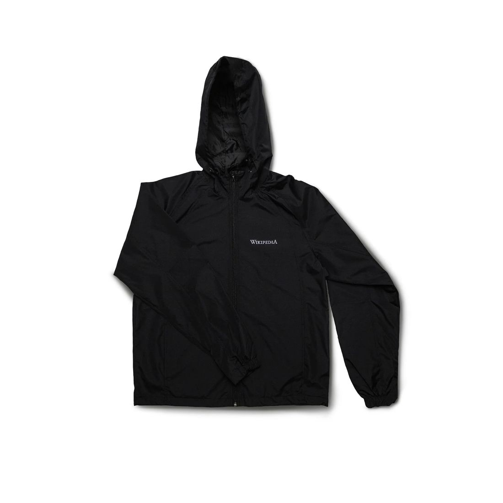
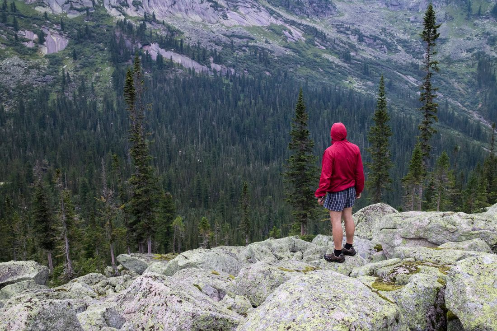
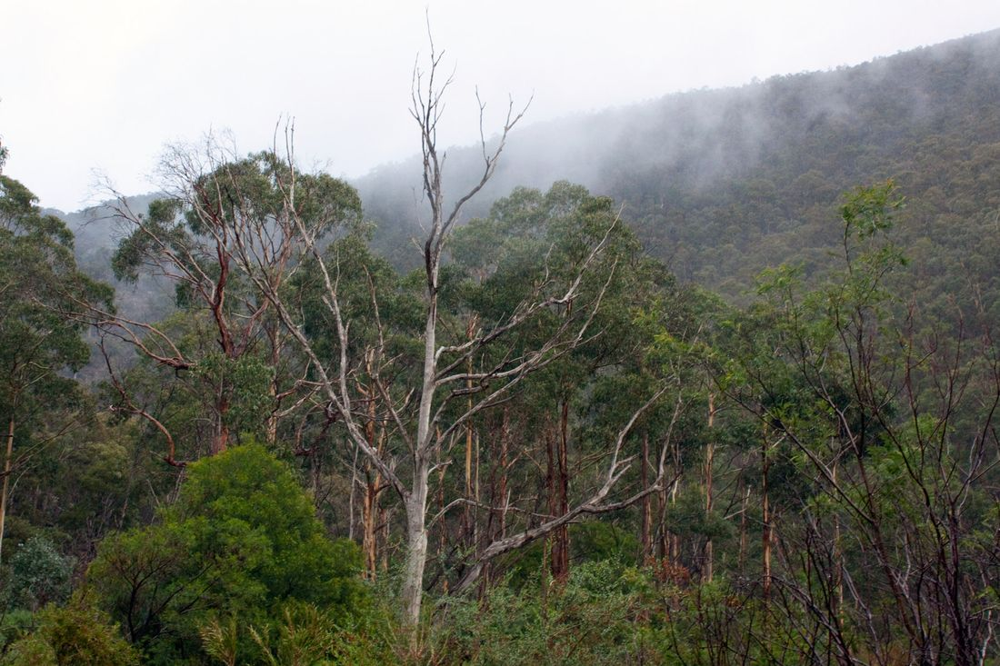

Engineering The Sub-135g Stormproof Weather Shell
Bridging the boundary between aerospace-grade ripstop nylon and monolithic microporous membranes. LightweightParka engineers ultralight weather barriers rated to 20,000mm hydrostatic head while maintaining an industry-leading breathability index of RET < 3.8.

Aerospace Textiles & Biomimetic Shell Physics
Every square centimeter is engineered to balance water column impermeability with active kinetic vapor release during intense cardiovascular exertion.

Laminate PhysicsTri-Component Micro-Laminate
Our proprietary 3-layer bonding fuses a 7D high-tenacity face textile with an expanded fluoropolymer membrane and a 0.5-denier circular tricot backer, preventing oil contamination while eliminating clamminess.
 Seam Integrity
Seam Integrity
Ultrasonic Seam Fusion
Traditional needle stitching punches 40 punctures per inch into waterproof fabric. We employ ultrasonic molecular welding backed by an 8mm laser-cut hot melt polyurethane seam tape, cutting weight by 35%.
AquaGuard® Micro-Zippers
Engineered with reversed matte polyurethane-coated coils that interlock tightly to prevent driving horizontal rain ingress while retaining effortless one-handed sliding under freezing sub-zero conditions.
Calibrated For Exact Environmental Envelopes
Select the exact mass-to-protection ratio demanded by your expedition, alpine ascent, or daily urban commute.

Aero 7D Trail Parka
The purest expression of ultralight rainwear. Weighing just 115 grams, it packs into its own internal chest pouch smaller than a standard tennis ball.
- Fabric Denier7D Cordura® Nylon
- Hydrostatic Head20,000 mm H2O
- BreathabilityRET 2.9 (ISO 11092)
- Total Garment Mass115 grams

Apex 15D Storm Parka
Constructed for sustained mountaineering in heavy precipitation. Reinforcements along high-abrasion shoulder yoke zones with dual co-axial storm hood.
- Fabric Denier15D / 30D Hybrid Ripstop
- Hydrostatic Head28,000 mm H2O
- BreathabilityRET 3.8 (ISO 11092)
- Total Garment Mass178 grams

Strata Commuter Parka
Extended 3/4 thigh length silhouette engineered with a silent, matte circular knit face fabric. Zero rustle, maximum weather defense in metropolitan downpours.
- Fabric Denier20D Quiet-Weave Matrix
- Hydrostatic Head22,000 mm H2O
- BreathabilityRET 4.2 (ISO 11092)
- Total Garment Mass210 grams
Microporous vs Hydrophilic Membranes
Water droplets measure approximately 100 to 3,000 microns in diameter, whereas water vapor molecules measure merely 0.0004 microns (0.4 nanometers). Our membrane features 1.4 billion microscopic pores per square centimeter, each roughly 0.2 microns wide.
This critical physical geometry ensures that surface tension completely blocks external liquid water droplets from penetrating under high dynamic pressures, while simultaneously permitting gaseous moisture vapor produced by perspiration to escape effortlessly along internal partial pressure gradients.
Standardized Laboratory Verification Matrix
All shell models are tested in accordance with international ASTM, ISO, and JIS laboratory standards to ensure verifiable field survivability.
| Test Parameter | Standard Method | Mass Market Shells | Traditional 3L Gore | LightweightParka 7D |
|---|---|---|---|---|
| Hydrostatic Head | JIS L 1092-B | 5,000 - 10,000 mm | 28,000 mm | 20,000 - 28,000 mm |
| Vapor Resistance (RET) | ISO 11092 | RET 12 - 18 (Moderate) | RET 6.5 (Good) | RET 2.9 - 3.8 (Ultra-breathable) |
| Garment Mass (Size M) | Digital Calibrated Scale | 380 - 450 g | 420 - 550 g | 115 - 178 g (65% reduction) |
| Seam Tape Width | Optical Micrometer | 18 - 22 mm | 13 - 15 mm | 8.0 mm Micro-Bond |
| DWR Contact Angle | Goniometer (Water) | 95° (Fluoro-C6) | 105° (Fluoro-C8) | 118° (C0 Eco-Siloxane) |
| Tear Strength (Elmendorf) | ASTM D1424 | 8.5 N | 14.0 N | 16.8 N (High-Tenacity 7D) |

Dynamic Storm-Hood Articulation
Most conventional storm hoods pull tightly across the forehead, blinding your peripheral vision whenever you rotate your head to check trail conditions or road traffic. LightweightParka solves this through co-axial geometric anchoring.
Our single-pull rear tensioner simultaneously contracts the crown circumference and the occipital rim. The hood turns synchronously with your skull, maintaining an unobstructed 180-degree field of view even during violent gale-force gusts.
- ✓ Bonded Laminated Brim: Maintains rigid aerodynamic projection to divert torrents away from your face without sagging under heavy rainfall.
- ✓ Internal Cohaesive™ Cord Locks: Embedded directly into fabric channels to eliminate external plastic hardware snagging.
- ✓ Climbing & Bike Helmet Compatible: Expands elastically over lightweight mountaineering or cycling helmets without choking chin mobility.
Interactive Packability & Mass Calculator
Model how our ultralight textiles alter your base pack weight and compressed volume inside your expedition rucksack.
Tested Across The Most Severe Mountain Horizons
Trusted by record-breaking thru-hikers, mountain rescue teams, and alpine minimalist climbers worldwide.
"Wore the Aero 7D shell during a continuous 48-hour traverse of the Scottish Highlands under relentless horizontal rain and 45-knot winds. Kept me completely dry without turning into a portable greenhouse inside."
"The 8mm micro-welded seams are a revelation. At 115 grams, this parka eliminated over 300 grams from my PCT fastpack base weight while surviving brush abrasion that shreds lesser silnylon garments."
"Most waterproof shells feel like stiff plastic cardboard. The Strata Commuter has a supple hand-feel, zero swish during walking, and easily protects fine wool suiting during sudden Tokyo monsoons."
Caring For High-Gauge Technical Laminates
To ensure your ultralight weather shell maintains its 20,000mm hydrostatic barrier and dynamic breathability over decades of expedition use, adhere to our laboratory care protocol:
- Technical Detergents Only: Wash with specialized residue-free liquid technical cleaners (e.g., Nikwax Tech Wash or Grangers). Never use standard household powder detergents or fabric softeners, which clog micropores.
- Gentle 30°C Cycle: Zip all AquaGuard closures, fasten Velcro cuff tabs, and wash in warm water on a gentle cycle with a double cold rinse to remove all surfactant traces.
- Thermal DWR Reactivation: Tumble dry on low heat for 20 minutes to heat-reactivate the C0 eco-siloxane polymers and restore maximum water droplet beading contact angles.

Zero Forever Chemicals (PFAS/PFC Free)
Protecting alpine environments means eliminating persistent fluorinated toxins from our outdoor supply chains without compromising life-safety storm performance.
C0 Fluorocarbon Elimination
Our surface repellent finishes utilize branched siloxane dendrimers that biodegrade safely rather than persisting for millennia in glacial runoff water basins.
Ocean-Reclaimed Cordura®
Face fabrics are woven using 100% post-consumer recycled nylon chips sourced from discarded maritime gillnets, reducing carbon emissions by 48% per garment.
Modular Field Patch Kits
Every shell includes laser-cut pressure-sensitive hot melt patches, enabling permanent waterproof structural repairs directly in mountain base camps.
Frequently Addressed Engineering Questions
Clear, unambiguous answers regarding hydrostatic testing, durability tradeoffs, and garment care.
A 10,000mm rating will withstand moderate showers, but when you kneel on soggy ground or carry a heavy backpack whose hipbelt and shoulder straps apply concentrated pressure (exceeding 15,000mm localized hydraulic force), water will push through the fabric. Our 20,000mm–28,000mm ratings guarantee complete impermeability even under heavy dynamic strap compression.
We utilize high-tenacity Cordura® nylon yarns woven in a double-grid ripstop pattern. While 7D yarns are ultra-fine, the reinforced grid-stop threads arrest tear propagation instantaneously. The fabric resists snagging, and in Elmendorf tear tests it surpasses standard 30D non-ripstop hiking shells.
If you sweat faster than the maximum physical vapor transmission rate of the membrane (typically during uphill sprints exceeding 800W metabolic output), moisture vapor can temporarily condense on the inner face. Opening the two-way underarm pit zips allows convective airflow to purge humid air within seconds.
Yes. We ship worldwide with carbon-neutral couriers. All shells are backed by our Comprehensive Expedition Guarantee, which covers material and manufacturing defects for the functional lifetime of the garment.